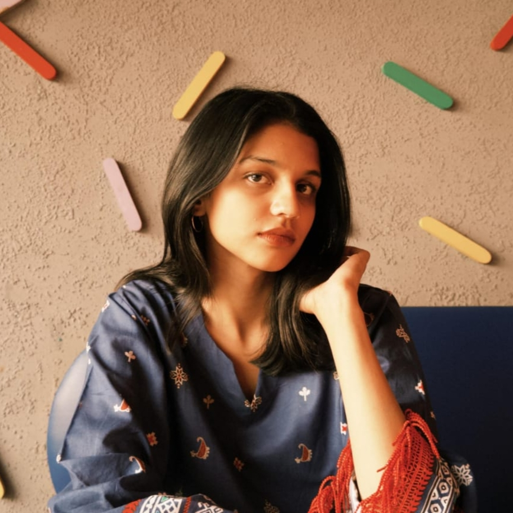

BS Computer Science Student
I'm a 5th semester Bachelor's Computer Science student with a strong interest in software and web development. I enjoy learning new technologies and solving problems.
Bachelor's in Computer Science
Comsats University Islamabad, Lahore Campus
A-level
The City School, Faisalabad
JavaFX Pet Simulation Application | Object-Oriented Programming Project
Developed a desktop pet simulation application in Java utilizing JavaFX for the graphical user interface.
Music Player desktop Application | Data Structures and Algorithm Projects
Built an offline music library and playback application in Java featuring custom playlist management.
Java
C++
HTML
CSS
JavaScript
Git
Node.js
Express
JavaFX